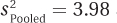

8.3 Interpreting the Independent-Samples t Test
 StatClips: Confidence Intervals: Intervals for DifferencesVideo on LaunchPad
StatClips: Confidence Intervals: Intervals for DifferencesVideo on LaunchPad
The final step in hypothesis testing, Step 6, is interpretation. This will follow the same format for the independent-samples t test as for previous hypothesis tests, addressing a series of questions:
Was the null hypothesis rejected?
How big is the effect?
How wide is the confidence interval?
The questions should be answered in order and each one adds additional information. After answering the first question, a researcher will have enough information for a basic interpretation. Answering all three questions, however, gives a deeper understanding of what the results mean and allows a researcher to write a more nuanced interpretation.
Was the Null Hypothesis Rejected?
The null and alternative hypotheses are set up to be all-inclusive and mutually exclusive. If a researcher can reject one hypothesis, he or she will have to accept the other hypothesis. If Dr. Villanova can reject the null hypothesis (that shallow processing is better than or equal to deep processing), he will be forced to accept the alternative hypothesis (that deep processing is better than shallow processing). With a one-tailed test, as this one is, if the null hypothesis is rejected, then the direction of the difference between the populations is known. With a two-tailed test, the researcher would need to examine the sample means in order to tell the direction of the probable population difference.
Here is what we know so far about Dr. Villanova’s study on depth of processing:
Shallow processing: M = 3.50, s = 1.54, n = 18
Deep processing: M = 8.30, s = 2.74, n = 20
df = 36
tcv = 2.434
t = 6.58
Dr. Villanova’s first move is to plug the observed value of the test statistic, 6.58, into the decision rule generated in Step 4 and decide which statement is true:
Is 6.58 ≥ 2.434?
Is 6.58 < 2.434?
273
6.58 is greater than or equal to 2.434, so the first statement is true and Dr. Villanova will reject the null hypothesis (see Figure 8.6) and call the results statistically significant. This means he accepts the alternative hypothesis that the mean number of words recalled by the population of people who use deep processing is greater than the mean number of words recalled by people who use shallow processing.
In APA format, Dr. Villanova would write the results as
t (36) = 6.58, p < .01 (one-tailed)
The t says that he is reporting the results of a t test.
The 36 in parentheses, the degrees of freedom, gives information about how many cases were in the study. Because the degrees of freedom for an independent-samples t test is the total sample size minus 2, that means there were a total of 36 + 2, or 38, participants in the study.
6.58 is the value of the test statistic that was calculated.
p < .01 indicates two things. The .01 tells that alpha was set at .01 because Dr. Villanova was willing to make a Type I error 1% of the time. The p < .01 reveals that the null hypothesis was rejected because the test statistic of 6.58 is a rare occurrence (it happens less than 1% of the time) when the null hypothesis is true.
Finally, the phrase in parentheses at the end, one-tailed, tells the reader that Dr. Villanova conducted a one-tailed test. As most hypothesis tests are two-tailed, it is only when the test is not two-tailed that this fact is noted.
If Dr. Villanova chose to stop the interpretation at this point, he would have enough information to make a meaningful statement about the results. Here’s what he could say:
In a study comparing deep processing to shallow processing, a statistically significant effect was found [t (36) = 6.58, p < .01 (one-tailed)]. People who were randomly assigned to use deep processing recalled more words (M = 8.30) than did people who used shallow processing (M = 3.50).
How Big Is the Effect?
274
Cohen’s d
Cohen’s d and r2, the same effect sizes used for the single-sample t test in Chapter 7, will be used for the independent-samples t test to tell how much impact the explanatory variable has on the outcome variable. The same standards can be used to judge the size of the effect for the independent-samples t test as were used for the single-sample t test:
0.00 means there is absolutely no effect.
d ≈ 0.20 or r2 = 1% is a small effect.
d ≈ 0.50 or r2 = 9% is a medium effect.
d ≥ 0.80 or r2 ≥ 25% is a large effect.
Equation 8.5 shows how to calculate Cohen’s d for the independent-samples t test. Note that it makes use of the pooled variance,  , which was 5.08.
, which was 5.08.
Equation 8.5 Formula for Calculating Cohen’s d for an Independent-Samples t Test
where d = Cohen’s d value
M1 = the mean for Group (sample) 1
M2 = the mean for Group (sample) 2
Here are Dr. Villanova’s calculations for the effect size for the depth of processing study. He substitutes in 8.30 as the mean of the deep processing group, 3.50 as the mean of the shallow processing group, and 5.08 as the pooled variance:
Cohen’s d value, 2.13, is greater than 0.80, so Dr. Villanova can consider that the effect of the independent variable (type of processing) on the dependent variable (number of words recalled) is large. Now, in his interpretation, he can note more than the fact that deep processing leads to significantly better recall than shallow processing. He can say that the effect size is large, that how people process information does matter in how well they recall information.
r2
275
The same formula, Equation 7.4, is used to calculate r2 for the independent-samples t test as was used for the single-sample t test. It makes use of two values, t and df:
r2, remember, calculates the percentage of variability in the outcome variable that is accounted for by the explanatory variable. Here, r2 tells how much of the variability in the number of words recalled is accounted for by the group, shallow vs. deep processing, subjects were assigned to. r2 varies from 0% to 100%; the higher the percentage, the stronger the effect. Here, the effect is quite strong, with over 50% of the variability explained by group status.
How Wide Is the Confidence Interval?
To determine the impact of the independent variable on the dependent variable in the population, a confidence interval is used. For an independent-samples t test, a researcher calculates a confidence interval for the difference between population means, the same type of confidence interval calculated for the single-sample t test. This confidence interval estimates how close together (or how far apart) the two population means may be. This tells how much of an effect may, or may not, exist in the population.
Though any level of confidence, from greater than 0% to less than 100%, can be used for a confidence interval, the most commonly calculated is a 95% confidence interval. The formula for that is found in Equation 8.6. Two other common confidence intervals are 90% and 99%.
Equation 8.6 Formula for Calculating the 95% Confidence Interval for the Difference Between Population Means
where 95%CIμDiff = the 95% confidence interval for the difference between population means
M1 = the mean of Group (sample) 1
M2 = the mean of Group (sample) 2
tcv = the critical value of t, two-tailed, α = .05, df = N –2 (Appendix Table 3)
276
For the depth of processing study, Dr. Villanova is going to calculate the 95% confidence interval. The two sample means are 8.30 and 3.50; the critical value of t, two-tailed, with α = .05, and 36 degrees of freedom is 2.028; and the standard error of the difference is 0.73:
= (8.30 – 3.50) ± (2.028 × 0.73)
= 4.8000 ± 1.4804
= from 3.3196 to 6.2804
= [3.32, 6.28]
The 95% confidence interval for the difference between population means ranges from 3.32 to 6.28. In APA format, it would be written as 95% CI [3.32, 6.28]. This confidence interval tells what the effect of the type of processing is on recall in the larger population. It says that the effect probably falls somewhere in the range from deep processing, leading to an average of anywhere from 3.32 to 6.28 more words being recalled over shallow processing.
Just as with the one-sample t test, there are three aspects of the confidence interval to pay attention to: (1) whether it captures zero; (2) how close it is to zero; and (3) how wide it is:
If the confidence interval captures zero, then it is plausible that no difference exists between the two population means. Thus, a confidence interval that captures zero occurs when the researcher has failed to reject the null hypothesis, as long as he or she is using a two-tailed test with α = .05 and as long as he or she is calculating a 95% confidence interval.
When the confidence interval comes close to zero, then it is possible that there is little difference between the two population means. When it ranges farther away from zero, then it is possible that the difference between the two populations is more meaningful. In this way, a confidence interval is helpful in thinking about the size of the effect.
The width of the confidence interval tells how precisely a researcher can specify the effect in the population. A narrower confidence interval means the researcher can be reasonably certain of the size and meaningfulness of the difference. A wider confidence interval leaves the researcher uncertain of the size and meaningfulness of the difference. In such a situation, it is often reasonable to recommend replicating the study with a larger sample size in order to obtain more precision.
Dr. Villanova’s confidence interval ranges from 3.32 to 6.28 for the depth of processing study. With regard to the three points above: (1) The confidence interval doesn’t capture zero. It is unlikely that there is no difference between the two population means. Dr. Villanova expected this result as the null hypothesis had been rejected. (2) The low end of the confidence interval, the end that is closer to zero, is 3.32. In Dr. Villanova’s opinion, a difference of 3.32 words is still a meaningful difference. Dr. Villanova, who planned and conducted this study, has expertise in this area and with this dependent variable. As a result, his opinion carries some weight. (3) The width of a confidence interval can be calculated by subtracting one side from the other:
6.28 – 3.32 = 2.96
277
The confidence interval is almost three words wide. In Dr. Villanova’s opinion, based on his expertise, this is a reasonably narrow confidence interval. Thus, it provides a precise-enough estimate of what the population difference is. He feels little need to replicate with a larger sample size to obtain a narrower confidence interval.
A Common Question
Q How are d, r2, and a confidence interval alike? How do they differ?
A d and r2 are officially called effect sizes, but a confidence interval also gives information about how strong the effect of the explanatory variable is. d and r2 reflect the size of the effect as observed in the actual sample; a confidence interval extrapolates the effect to the population. Cohen’s d is not affected by sample size. If the group means and standard deviations stay the same but the sample size increases, d will be unchanged, but the confidence interval will narrow and offer a more precise estimate of the population value. r2 is inversely affected by sample size—as N increases, r2 decreases.
Putting It All Together
Dr. Villanova has addressed all three of the interpretation questions and is ready to use the information to write an interpretation that explains the results. In the interpretation, he addresses four points:
He starts with a brief explanation of the study.
He states the main results.
He explains what the results mean.
He makes suggestions for future research.
There’s one more very important thing Dr. Villanova does. He did a lot of calculations—t, d, r2, and a confidence interval—in order to understand the results. But, he doesn’t feel obligated to report them all just because he calculated them. He limits what he reports in order to give a clear and concise report:
This study compared how deep processing of words vs. shallow processing of words affected recall on an unexpected memory test. The deep processing group (M = 8.30 words, s = 2.74 words) recalled more words than the shallow processing group (M = 3.50 words, s = 1.54 words). This effect was statistically significant [t(36) = 6.58, p < .01 (one-tailed)] and it is a large effect. Using deep processing leads to markedly better recall when a person is not trying to memorize the words. Whether the effect exists when a person is purposefully trying to learn a list of words should be examined in a subsequent study.
Worked Example 8.2
For practice interpreting results for an independent-samples t test, let’s return to Dr. Risen’s study about how temperature affects the pace of city life. She measured the walking speed for 33 people walking alone on a cold day (20°F) and for 28 people on a warm day (72°F). Here is what is already known:
278
For the cold day: M = 3.05 mph, s = 0.40
For the warm day: M = 2.90 mph, s = 0.39
df = 59
tcv, two-tailed, α = .05 is ±2.004
Was the null hypothesis rejected? The first step is applying the decision rule. Which is true?
Is 1.50 ≤– 2.004 or is 1.50 ≥ 2.004?
Is –2.004 < 1.50 < 2.004?
The second statement is true and the value of the test statistic falls in the common zone, as shown in Figure 8.7. Insufficient evidence exists to reject the null hypothesis, so there is no reason to conclude that temperature affects walking speed. The results are called “not statistically significant.” In APA format, the results would be written like this:
t (59) = 1.50, p > .05
A Common Question
Q When she looked up the critical value of t in Appendix Table 3, Dr. Risen had to use the row with 55 degrees of freedom because there was no row for df = 59. But, in reporting the results in APA format, she used df = 59, not df = 55. Why?
A The degrees of freedom within the parentheses in APA format provide information about how many cases there are, so they should reflect that.
279
How big is the effect? Using Equation 8.5, Dr. Risen calculated Cohen’s d:
Equation 8.6 is used to calculate r2:
Hypothesis testing says there is not enough evidence to conclude an effect has occurred, but the two effect sizes suggest that a small to moderate effect may be present. Dr. Risen might want to replicate the study with a larger sample size in order to have a better chance of rejecting the null hypothesis and seeing whether temperature does affect the pace of urban life.
How wide is the confidence interval? Applying Equation 8.6, Dr. Risen calculated the 95% confidence interval:
= (3.05 – 2.90) ± (2.004 × 0.10)
= 0.1500 × 0.2004
= from – 0.0504 to 0.3504
= [–0.05, 0.35]
As expected, the confidence interval, –0.05 to 0.35, captures zero. So, the possibility that there is zero difference between the two population means—walking speed on cold days vs. walking speed on warm days—is plausible. What other information is contained in the confidence interval? It tells Dr. Risen that comparing the walking speed of the population of warm-day pedestrians to the population of cold-day pedestrians, the difference may be from 0.05 mph slower on cold days to 0.35 mph faster on cold days. In other words, from this study she can’t tell if, how much, or in what direction the two populations differ.
280
But, the confidence interval raises the possibility that the null hypothesis is false and pedestrians walk about a third of a mile per hour faster on cold days. In the language of hypothesis testing, she is worried about Type II error, that there may be an effect of temperature on walking speed that she failed to find. To ease her concern, she’s going to recommend replicating the study with a larger sample size. This would increase power, making it easier to reject the null hypothesis if it should be rejected, and it would give a narrower confidence interval.
Putting it all together. Here’s Dr. Risen’s four-point interpretation. She (1) tells what the study was about, (2) gives the main results, (3) explains what the results mean, and (4) makes suggestions for future research:
This study was conducted to see if temperature affected the pace of life in a city. The walking speed of pedestrians was measured on a cold day (20°F) and on a warm day (72°F). The mean speed on the cold day was 3.05 mph; on the warm day it was 2.90 mph. The difference in speed between the two days was not statistically significant [t(59) = 1.50, p > .05]. These results do not provide sufficient evidence to conclude that temperature affects the pace of urban life. However, the confidence interval for the difference between population means raised the possibility that there might be a small effect of temperature on walking speed. Therefore, replication of this study with a larger sample size is recommended.
Application Demonstration
One of the most famous studies in psychology was conducted by Festinger and Carlsmith in 1959. In that study, they explored cognitive dissonance, a phenomenon whereby people change their attitudes to make attitudes consistent with behavior. Their study used an independent-samples t test to analyze the results. Let’s see what they did and then apply this book’s interpretative techniques to update Festinger’s and Carlsmith’s findings.
Festinger and Carlsmith brought male college students into a laboratory and asked them to perform very boring tasks. For example, one task involved a board with 48 pegs. The participant was asked to give each peg a one-quarter clockwise turn, and to keep doing this, peg after peg. After an hour of such boring activity, each participant was asked to help out by telling the next participant that the experiment was enjoyable and a lot of fun. In other words, the participants were asked to lie.
This is where the experimental manipulation took place: 20 participants were paid $1 for lying and 20 were paid $20 for lying. After helping out, each participant was then asked to rate how interesting he had actually found the experiment. The scale used ranged from –5 (extremely boring) to +5 (extremely interesting). Obviously, the participants should rate the experiment in the negative zone because it was quite boring.
281
Did how much participants get paid influence their rating? It turned out that it did. The participants who were paid $1 gave a mean rating in the positive zone (+1.35), and the participants who were paid $20 gave a mean rating in the negative zone (–0.05). This difference was statistically significant [t(38) = 2.22, p < .05]. The participants paid less to lie gave statistically significantly higher ratings about their level of interest in the study.
The researchers used cognitive dissonance to explain the results. The participants who had been paid $20 ($160 in 2015 dollars) had a ready explanation for why they had lied to the next participant—they had been well paid to do so. The participants who had been paid $1 had no such easy explanation. The $1 participants, in the researchers’ view, had thoughts like this in their minds: “The task was very boring, but I just told someone it was fun. I wouldn’t lie for a dollar, so the task must have been more fun than I thought it was.” They reduced the dissonance between their attitude and behavior by changing their attitude and rating the experiment more positively. Festinger’s and Carlsmith’s final sentence in the study was, “The results strongly corroborate the theory that was tested.”
Statistical standards were different 60 years ago. Festinger and Carlsmith reported the results of the t test, but they didn’t report an effect size or a confidence interval. Fortunately, it is possible to take some of their results and work backward to find that  and . Armed with these values, an effect size and a confidence interval can be calculated.
First, here are the calculations for both effect sizes:
282
Now, here are the calculations for the confidence interval:
= (1.35 – (–0.05)) ± (2.024 × 0.63)
= 1.4000 ± 1.2751
= from 0.1249 to 2.6751
= [0.12, 2.68]
From d and r2, it is apparent that the effect size falls in the medium range. From the confidence interval, one could conclude that though an effect exists, it could be a small one. Based on this study, it would be reasonable to conclude that cognitive dissonance has an effect. But, how much of an effect isn’t clear. Cognitive dissonance has gone on to be a well-accepted phenomenon in psychology. However, if this early cognitive dissonance study were being reported by a twenty-first-century researcher, he or she shouldn’t say that the results “strongly corroborated” the theory.
Practice Problems 8.3
Apply Your Knowledge
8.07 A dermatologist obtained a random sample of people who don’t use sunscreen and a random sample of people who use sunscreen of SPF 15 or higher. She examined each person’s skin using the Skin Cancer Risk Index, on which higher scores indicate a greater risk of developing skin cancer. For the 31 people in the no sunscreen (control) condition, the mean was 17.00, with a standard deviation of 2.50. For the 36 people in the sunscreen (experimental) condition, the mean was 10.00, with a standard deviation of 2.80. With α = .05, two-tailed, and df = 65, tcv = 1.997. Calculations showed that , , and t = 10.77. Use the results to (a) decide whether to reject the null hypothesis, (b) determine if the difference between sample means is statistically significant, (c) decide which population mean is larger than the other, (d) report the results in APA format, (e) calculate Cohen’s d and r2, and (f) report the 95% confidence interval for the difference between population means.
8.08 An exercise physiologist wondered whether doing one’s own chores (yard work, cleaning the house, etc.) had any impact on the resting heart rate. (A lower resting heart rate indicates better physical shape.) He wasn’t sure, for example, whether chores would function as exercise (which would lower the resting heart rate) or keep people from having time for more strenuous exercise, increasing the heart rate. The 18 people in the control group (doing their own chores) had a mean of 72.00, with a standard deviation of 14.00. The 17 in the experimental group (who paid others to do their chores) had a mean of 76.00, with a standard deviation of 16.00. Here are the results: α = .05, two-tailed, df = 33, tcv = 2.035, , , and t = 0.79. Further, d = 0.27, r2 = 1.86%, and the 95% CIμDiff ranges from –6.32 to 14.32. Use these results to write a four-point interpretation.